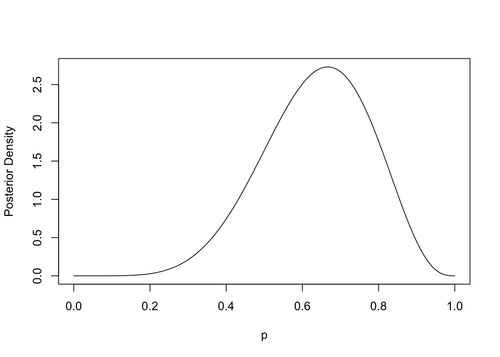
I’ve begun reading Statistical Rethinking by Richard McElreath,1 and I wanted to log some of my thoughts that come to mind while working through his ideas on modern statistical science.
Chapter 2 (Modes of Inference)
Likelihoods
In this chapter, a hypothetical experiment was introduced in which an observer collects data about the proportion of water on a globe (to understand the true proportion of water on earth).
Let \(p\) denote the proportion of water on the globe, \(W\) the number of observations that yielded “water”, and \(L\) the number of observations that yielded “land”. By the Binomial distribution:
\[ Pr(W=w,L=l\quad|\quad p)={w+l\choose w}p^w(1-p)^l \]
Now presume the observer recorded \(W=6\) and \(L=3\) in nine trials. The “likelihood” of these data can be plotted as a function of probability:
And this is by no means a probability distribution. It doesn’t sum to one; it integrates to 0.1. However the recognition of this function is a crucial step towards two possible modes of inference:
- In a classical sense, this function represents an objective to maximize, then compare against a null hypothesis (often \(H_0: p=0.5\)).
- In a Bayesian sense, this function represents one piece of the joint distribution of \(W, L, p\) (the other piece being the prior on \(p\)). And this is the mode of inference advocated by the book.
When we start with a uniform prior \(p\sim\text{Beta}(1, 1)\), we end up with a posterior that looks uncannily like our likelihood function:

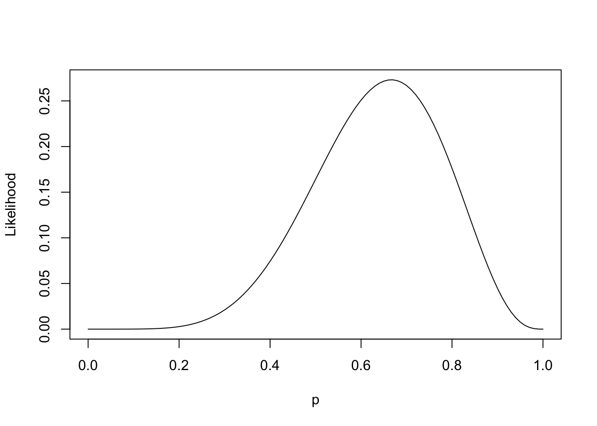
They’re actually the same function, just with different y-axis scales. I previously didn’t realize that…
Likelihoods as Objectives
As part of the classical mode of inference, one might reasonably seek to maximize the above likelihood function \(\mathcal{L}\), setting \(p=\hat{p}\) at maximal likelihood, then comparing the ratio of likelihoods between \(\mathcal{L}(\hat{p})\) and \(\mathcal{L}(p_0)\). It turns out, when this ratio is greater than some constant \(c\), one would rationally conclude that \(p\neq p_0\) (in other words, one rejects the null hypothesis).
So contrasting the two modes of inference: in the classical sense, one compares two points along the likelihood curve to posit evidence against some hypothesis \(H_0\). In a Bayesian sense, one obtains a posterior distribution over plausible values of \(p\), which can be further analyzed for compatibility with any set of hypotheses. And the realization for me (at least in this trivial example) is that the likelihood and posterior functions are the exact same shape.
Reflecting on this a little more, I can understand how the relative simplicity of the classical approach might be appealing at the start of a scientific inquiry, say, when we don’t know much about the phenomenon but expect to learn a lot quickly. However, when an inquiry matures to the point of having data readily available, it seems silly to forgo the benefit of having the entire distribution of a parameter available to interrogate. It’s clear that the latter offers a richer description of the unknown phenomenon. Perhaps an analogy would be like entering a dark cavernous tunnel, where the classical approach affords you looks at two possible paths forward (one of which is a dead-end and the other quite a promising lead). The Bayesian approach, on the other hand, affords you something like a map of multiple paths forward.
Algorithms for Posterior Approximation
I was previously aware of posterior approximation using Markov chain Monte Carlo (MCMC), but I was surprised to learn about two viable alternatives to numerically sampling from a posterior distribution.
I’ll continue with the hypothetical experiment from the previous section in which we are aiming to estimate \(p\), the proportion of water on the globe.
By selecting a finite grid across the support of our parameter \(p\), we can approximate the posterior:
Code
grid.seq <- seq(0, 1, length.out=20)
prior <- dunif(grid.seq)
likelihood <- dbinom(6, size=9, prob=grid.seq)
posterior <- prior * likelihood / sum(prior * likelihood)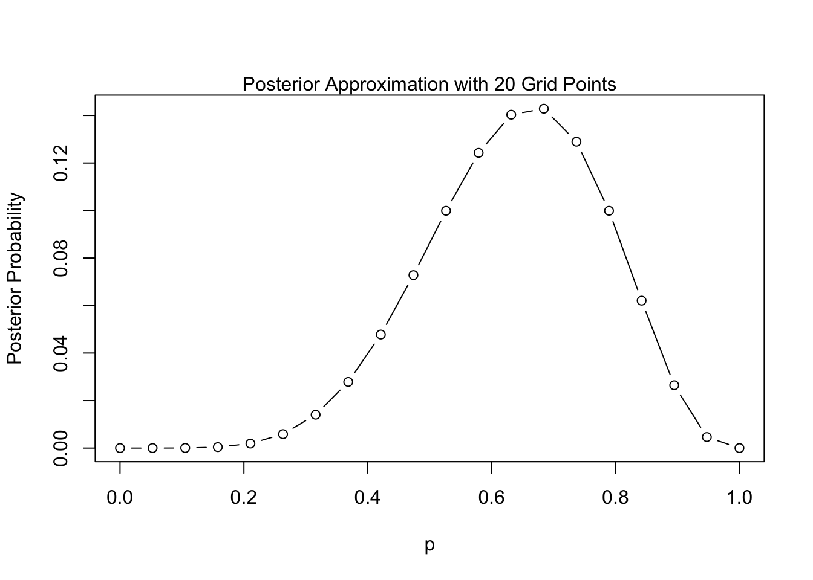
This technique involves leveraging a Gaussian approximation of the posterior near its mode. I believe the theory behind it is related to the efficiency property2 of MLEs, which states that the MLE converges in distribution to a normal distribution at larger sample sizes. It is relatively easy to code up using the quap function from the textbook’s rethinking package:3
Code
posterior <- quap(
alist(
W ~ dbinom(W+L ,p) ,
p ~ dunif(0, 1)),
data=list(W=6,L=3) )
quad.post <- precis(posterior)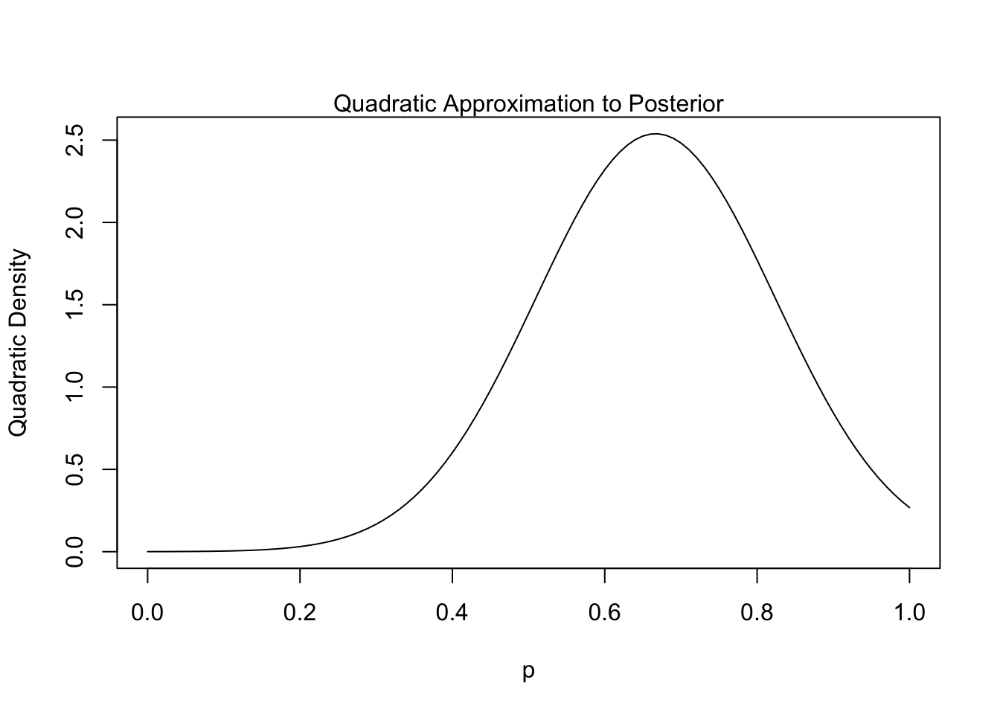
Finally MCMC, which is the most-widely adopted approach to posterior approximation, has many algorithmic variants. The following is an example of the Metropolis Algorithm:4
Code
set.seed(1818)
n.samples <- 2000
p <- rep(NA, n.samples)
p[1] <- 0.5
obs.data <- list(W=6, L=3)
for (i in 2:n.samples){
p.new <- rnorm(1 , p[i - 1] , 0.1)
if (p.new < 0) p.new <- abs(p.new)
if (p.new > 1) p.new <- 2 - p.new
q0 <- dbinom(obs.data$W, obs.data$W + obs.data$L, p[i-1])
q1 <- dbinom(obs.data$W, obs.data$W + obs.data$L, p.new)
p[i] <- ifelse(runif(1) < q1/q0, p.new, p[i-1])
}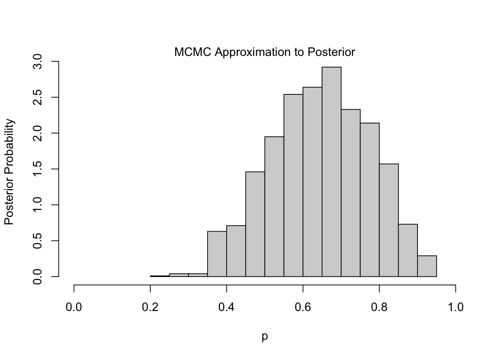
The one intriguing feature of the Metropolis Algorithm is the acceptance rule, which computes a ratio of likelihoods, given \(p\) and \(p'\), and accepts the new value \(p'\) if this ratio is above some randomly-generated value.
In other words, the internal mechanics of the algorithm work a bit like the classical approach to inference (see above), in which the likelihoods of two points are compared. In the classical approach, \(\hat{p}\) is never technically “accepted”, but \(p_0\) can be rejected if the ratio of likelihoods (\(\mathcal{L}(\hat{p})\) vs. \(\mathcal{L}(p_0)\)) is above some constant \(c\). In contrast to MCMC, however, \(c\) is not randomly-generated but instead dictated by the choice of \(\alpha\), which is commonly 0.05.
Another noteworthy feature, not highlighted here, is that the Metropolis Algorithm does not require computation of exact densities; relative density functions work just fine. That’s a major advantage when it comes time to scale the algorithm with increasing model complexity.
Chapter 4 (Linear Regression)
Normal (Gaussian) Distributions
This chapter points out the commonality of the Normal Distribution, which serves as a wonderful approximation of natural phenomena such as variation in height, variation in growth rates, or games of chance. The chapter begins by introducing a hypothetical experiment, which I paraphrase below:
Suppose 1,000 people line up on the 50-yard line of a American football field. Each person flips a coin 16 times; for each time they see “heads” they step one yard in the direction of the home team’s endzone. Likewise, for each time they see “tails” the step one yard towards the away team’s endzone.
It’s apparent from the simulation below that this somewhat-contrived process will yield a distribution of yardage positions that looks like the following:
N <- 16
set.seed(1818)
simulation <- replicate(
1000,{
heads <- rbinom(1, size=N, prob=0.5)
tails <- N - heads
steps <- heads - tails
steps
}
)
barplot(prop.table(table(simulation)), xlab="Position (0=50-yard line)")
mtext(paste("Observed SD:", round(sd(simulation), 3)))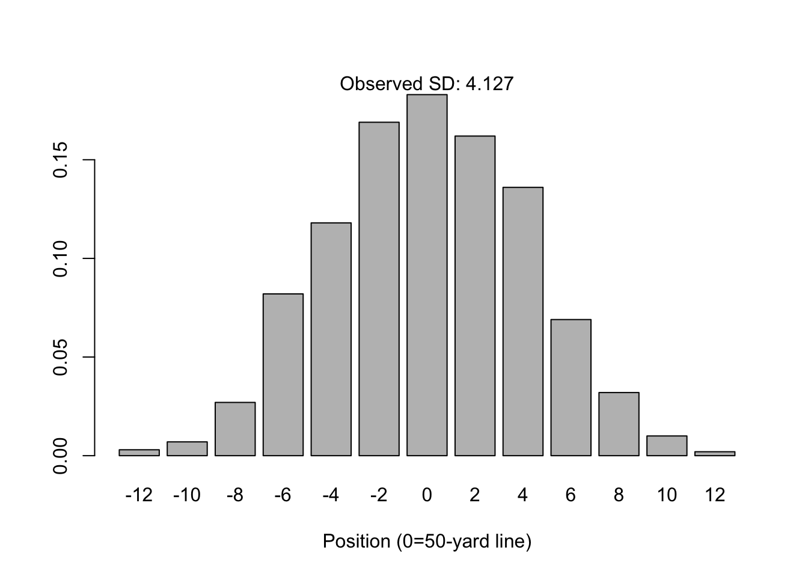
By the central limit theorem, it’s possible to predict the ultimate distribution of positions. Let \(X_i\) be an individual coin flip, and \(\bar{X}\) be the mean number of heads for an individual person; there are 1,000 people and \(n=16\) tosses per person. The central limit theorem predicts the distribution of \(Y=n(2\bar{X}-1)\) will converge towards:
\[ Y \rightarrow N(0, 4n\sigma^2) \quad \text{where} \quad \sigma^2=p(1-p) \] Note that \(p\) is assumed to be 0.5 because the coin is fair. But what’s neat is that the assumption of a fair coin is not a requirement for normality to arise. For example, what if the probability of heads is \(p=0.25\)?
The distribution for \(n=16\) is not quite “normal”, in that it is asymmetrically skewed towards the right tail (towards the home team’s end zone). However, the normal distribution is not a bad approximation and the central limit theorem states this will still converge given large enough \(n\). See for example, \(n=64\).
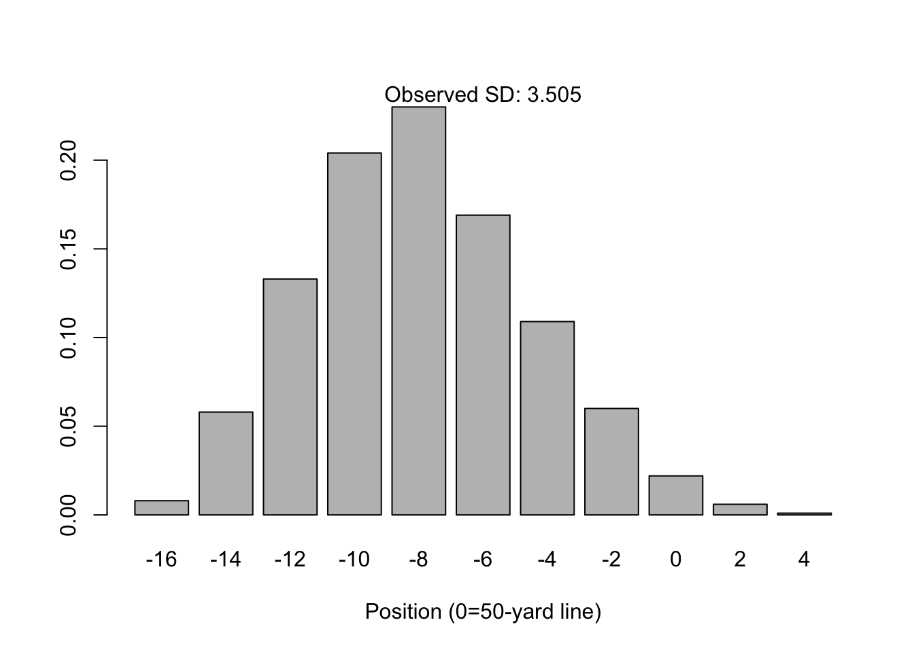
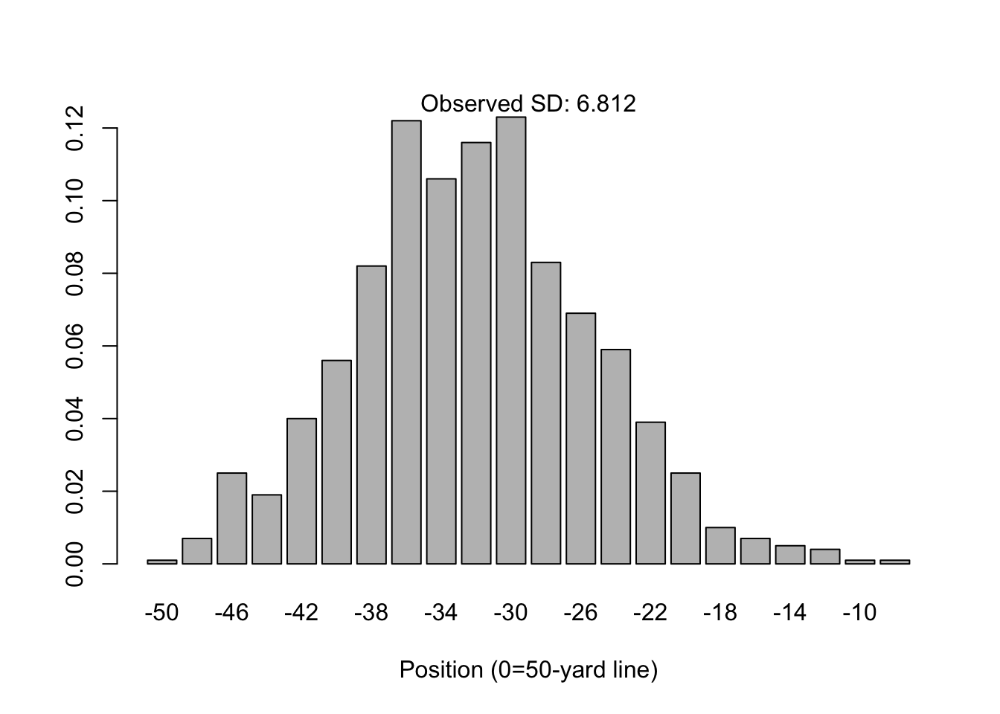
The CLT Revisited
In it’s classical form (the form I learned in grad school), the central limit theorem states that for independent samples of \(X_i\) with mean \(\mu\) and variance \(\sigma^2\), the distribution of the sample mean \(\bar{X}\) converges with large \(n\) to a Normal distribution centered at \(\mu\) with predictable variance:
\[ \bar{X} \rightarrow N(\mu, \frac{\sigma^2}{n}) \]
Selecting Priors
While classical inference is often concerned with selecting the best estimators, Bayesian inference depends heavily on the choice of priors. The latter is not something that’s emphasized in most courses (indeed, not in my graduate school classes), and it’s usually assumed that priors emerge out of a textbook when needed to solve a Bayesian problem, or that they are extremely vague and uninformative.
What I like about this chapter is its insistence on selecting appropriate priors, and then checking the assumptions reinforced by priors before analyzing any data. This is a sensible thing to do; indeed the choice of different priors may distinguish two analysts from one another, but to even begin analyzing data one ought to reassure themselves that the prior chosen is at least appropriate.
Consider the example from this chapter, which analyzes heights as Gaussian-distributed. In a way that’s surprisingly common in other textbooks, one might suppose that the prior on the mean height \(\mu\) is uninformative, for example:
\[ \begin{align} h_i \sim \text{Normal}(\mu, \sigma^2) \\ \mu \sim \text{Normal}(0, 100^2) \\ \sigma \sim \text{Unif}(0, 50) \\ \end{align} \] The choice of prior for \(\mu\) is uninformative, yes, but it’s actually a preposterous assumption. Human heights are not distributed with such high variance, nor are they centered at zero. But this is exactly the kind of choice that a naive observer would want to make if they knew nothing about human heights. Instead the author posits a model that is reasonable given his height of 178cm:
\[ \begin{align} h_i \sim \text{Normal}(\mu, \sigma^2) \\ \mu \sim \text{Normal}(178, 20^2) \\ \sigma \sim \text{Unif}(0, 50) \\ \end{align} \]
Below I compare the two choices of priors through a prior predictive check:
Code
sample.mu <- rnorm(10000, mean=0, sd=100)
sample.sigma <- runif(10000, min=0, max=50)
prior.h <- rnorm(10000, mean=sample.mu, sd=sample.sigma)
hist(prior.h, main=NA, xlim=c(-400, 400))
mtext("Prior on Height (cm)")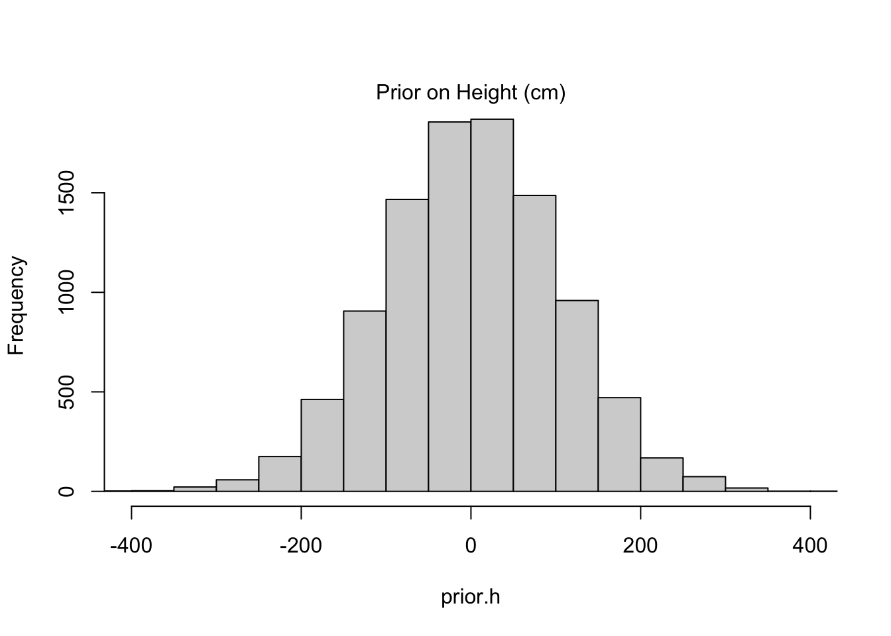
Code
sample.mu <- rnorm(10000, mean=178, sd=20)
sample.sigma <- runif(10000, min=0, max=50)
prior.h <- rnorm(10000, mean=sample.mu, sd=sample.sigma)
hist(prior.h, main=NA, xlim=c(-400, 400))
mtext("Prior on Height (cm)")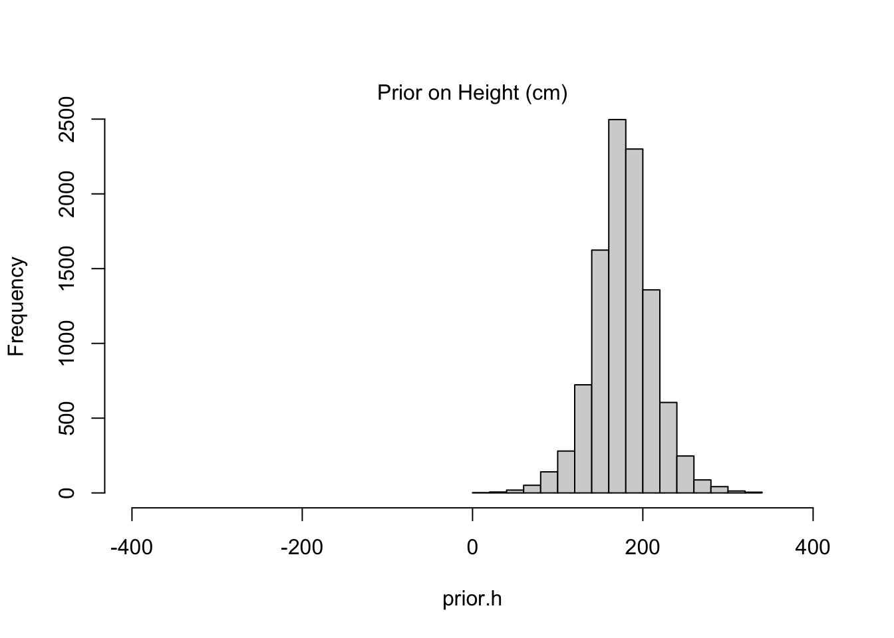
The informative prior might seem like “cheating” in some respect because it is more precise to begin with, but such precision is the exact reason we’d like to work with priors in the first place. Priors help to constrain our estimates to ranges we believe plausible. The alternatives–keeping priors vague or reverting to classical methods–might be lauded as “objective” but fail to provide meaningful insight when our sample size is limited (as it almost always is). Even worse, when folks see an objective result that doesn’t agree with their intuition, they come up with subjective reasons to discount it, and those reasons are almost never formalized with the same transparency as a prior selection.
Chapter 5 (Multiple Linear Regression)
Testable Implications
This chapter, which emphasizes multiple regression techniques, begins with a surprising discourse on causal inference. I’m thankful for the opportunity to review some causal concepts, since just like Bayesian methods, causal inference is not often taught in traditional statistics curricula.
Here are some directed acyclic graphs (DAGs) that were proposed, in an attempt to explain the phenomenon of variability in state-level divorce rates:
Code
dag.mediator <- dagitty( "dag {
Age -> Divorce
Age -> Marriage
Marriage -> Divorce}")
coordinates(dag.mediator) <- list(
x=c(Age=0, Divorce=1, Marriage=2),
y=c(Age=0, Divorce=1, Marriage=0))
plot(dag.mediator)
dag.independ <- dagitty( "dag {
Age -> Divorce
Age -> Marriage}")
coordinates(dag.independ) <- list(
x=c(Age=0, Divorce=1, Marriage=2),
y=c(Age=0, Divorce=1, Marriage=0))
plot(dag.independ)
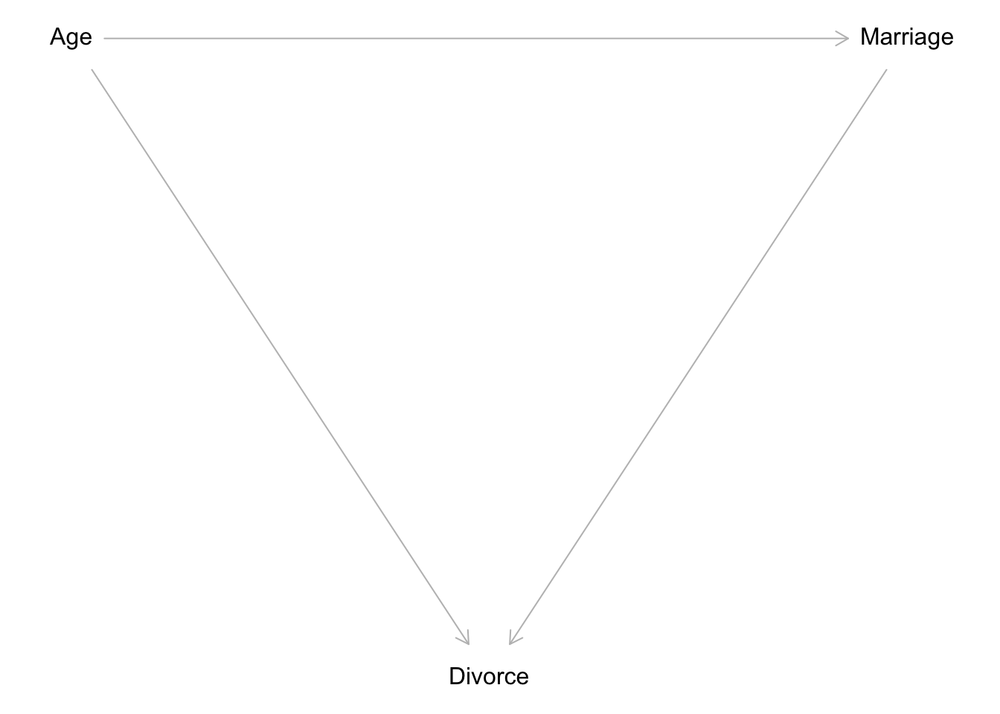
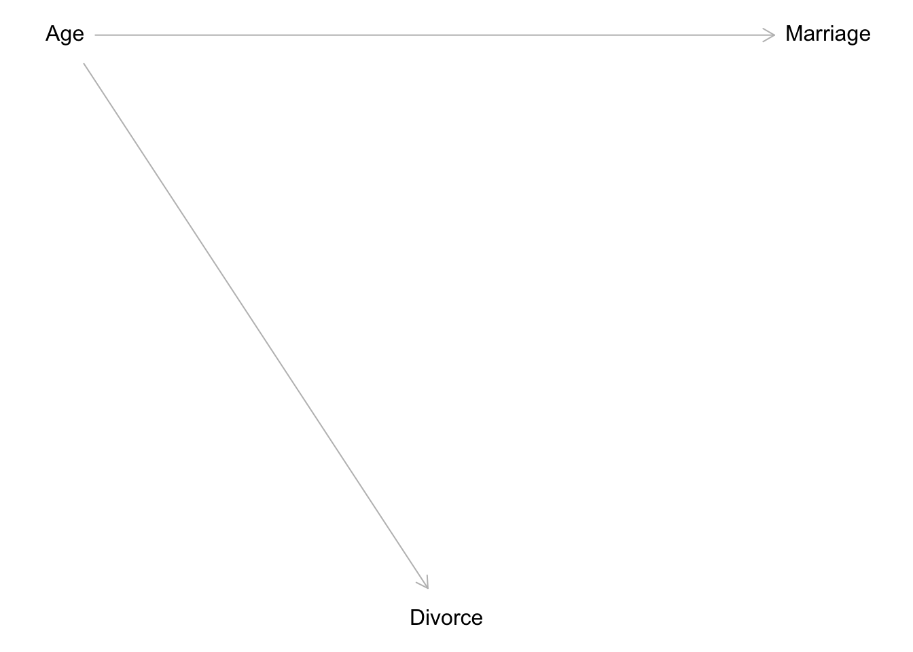
Now the testable implication of Figure 1 is whether the marriage rate is conditionally independent of divorce. In formal terms:
\[ \begin{align} M \perp D |A \\ \quad \text{where} \quad M:\text{Marriage rate,} \quad D:\text{Divorce rate,} \\ \quad \text{and} \quad A:\text{Age at marriage (median)} \end{align} \] This example introduced new intuition that I had not previously encountered in my graduate statistics training. One, the idea of conditional independence is not new, but knowing that it could be gleaned from a DAG is a valuable lesson. It highlights the value in drawing these diagrams before modeling. Two, the concept of mediators is not new either, but knowing that a mediator model implies all three variables are associated with one another is a good reminder of the differences between data structures and causal implications. We might observe many correlations within an observed set of data, some of them spurious. However, having a DAG to return to makes it easier to theorize how such correlations came to be.
Here’s a simulated example of conditional independence, in which marriage rate is conditionally independent of divorce rate, yet a linear regression still picks up on the strong (adjusted) relationship between the two:
Code
set.seed(1818)
N <- 50
age <- rnorm(N)
mar.rate <- rnorm(N, -age)
div.rate <- rnorm(N, age)
precis(lm(div.rate ~ mar.rate), prob=0.95)Without adjusting for age, we would mistakenly conclude that marriage rate is the solely important predictor of divorce rate (with a confidence interval that includes negative boundaries). In reality, this association disappears when we “control” for age:
Terminology: The book makes a compelling argument against use of the word “control”, which is common in statistical parlance, because it suggests more power than is truly available. In lieu of an experimental control, the best we can do is adjust for predictors that might share a causal relationship with the outcome. That is what’s accomplished in multiple regression.
Code
precis(lm(div.rate ~ mar.rate + age), prob=0.95)Counterfactual Plots
Of the various diagnostics for multiple regression, I found the proposition of a counter-factual plot most compelling. They are constructed as follows:
- Choose the predictor (intervention) to manipulate.
- Define the range of values for the chosen predictor.
- Leverage the posterior to simulate values of other variables, including both the outcome and dependent predictors.
It’s the third step that’s new for me. I am not used to considering the intermediate effects of a change in the intervention, but that seems to be exactly what Bayesian models are equipped to handle. Here’s the textbook example:
Code
states <- list(
A = standardize(WaffleDivorce$MedianAgeMarriage),
M = standardize(WaffleDivorce$Marriage),
D = standardize(WaffleDivorce$Divorce))
fit.counterfac <- quap(
alist(
D ~ dnorm(mu, sigma),
mu <- alpha + beta_mar * M + beta_age * A,
alpha ~ dnorm(0, 0.2),
beta_mar ~ dnorm(0, 0.5),
beta_age ~ dnorm(0, 0.5),
sigma ~ dexp(1),
M ~ dnorm(theta, gamma), ### I'm using theta, gamma for the mediator model
theta <- eta + delta_age * A,
eta ~ dnorm(0, 0.2),
delta_age ~ dnorm(0, 0.5),
gamma ~ dexp(1)),
data=states)
precis(fit.counterfac, digits=2)From this model, it’s clear that age and marriage rate are associated through the posterior summary of \(\delta_{\text{Age}}\), which is consistently negative. Therefore the effect of an increase in the median age of marriage is associated with a decrease in the marriage rate, which makes perfect sense.
Next I carry out the three steps necessary to create a counter-factual portrait of a change in the median age at marriage, all in the following code block:
age.seq <- seq(-2, 2, length.out=10)
post <- extract.samples(fit.counterfac)
sim.counterfac <- list()
# simulate a 1000 x 10 matrix of marriage rates...
sim.counterfac$M <- sapply(
age.seq,
function(age) rnorm(1000, post$eta + post$delta_age * age, post$gamma))
# next, simulate a 1000 x 10 matrix of divorce rates, conditional on prev. sim
sim.counterfac$D <- sapply(
1:length(age.seq),
function(i) rnorm(
1000,
post$alpha + post$beta_age * age.seq[i] + post$beta_mar * sim.counterfac$M[, i],
post$gamma))I think the trick here is to use the simulated values of the marriage rate (conditional on chosen ages) to simulate–in-turn–values of the divorce rate. I can say confidently that I would not have though to do this, especially within the scope of one model. But the posterior makes this trivial to examine:
Code
plot(age.seq, colMeans(sim.counterfac$D), ylim=c(-2, 2), type="l",
xlab="Manipulated Age", ylab="Counterfactual Divorce")
shade(apply(sim.counterfac$D, 2, PI), age.seq)
plot(age.seq, colMeans(sim.counterfac$M), ylim=c(-2, 2), type="l",
xlab="Manipulated Age", ylab="Counterfactual Marriage")
shade(apply(sim.counterfac$M, 2, PI), age.seq)
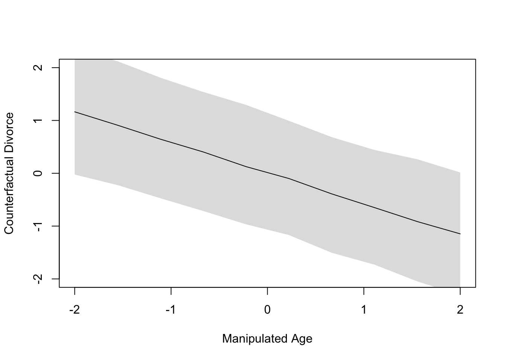
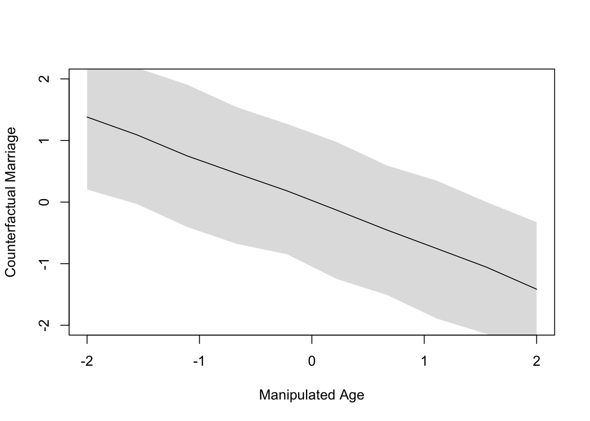
The plot in Figure 2 illustrates the entire strength of associations illustrated earlier in Figure 1; namely, that age is associated with both marriage rate and divorce rate. Thus, intervening to alter the age of marriage will cascade downstream to effect both the mediator and the outcome, where the outcome is doubly affected by both the intervention and the mediator.
Markov Equivalence
What if we are unsure about the direction of the mediation effect? In the example above, this would look like two DAGs with a classic mediator structure, only we’d be unsure whether age or marriage rate was the mediator. In such cases, the DAGs would imply the same conditional independencies, and there would be no testable implications. Such DAGs are said to be part of a Markov Equivalence set. Indeed many hypothetical DAGs may part of a Markov equivalent set for a given problem, but scientific knowledge will eliminate many of the implausible ones.
Encoding Categorical Predictors
It is common practice to encode categorical predictors as indicators or “dummy” variables. In other words, we construct new variables with 1’s and 0’s to encode category membership. I would say this approach resembles the vast majority of models in applied statistical literature I’ve read. When interpreting such models, one has to remember the reference category, because every parameter of an indicator variable represents a difference between two groups. Admittedly, this causes confusion.
But there are of course other ways to encode categorical variables. The approach advocated by the book is to use indexed parameters for each level in the category. So if we have \(K\) levels, we have \(K\) indices of the parameter describing that category. And we don’t include an intercept. Apparently, this is acceptable for models even with multiple categorical predictors, as I demonstrate below:
Less than full rank? In my graduate statistics training, I was taught that models with multiple categorical predictors, all with index encoding (as described here) would cause issues by nature of having ‘less than full rank’. In mathematical terms, the design matrix contains one or more columns that can be expressed as linear combinations of the other columns. When this occurs, no unique solution to ordinary least squares exists. But we’re not dealing in ‘ordinary’ models anymore… I wonder if the priors help the Bayesian approach converge.
primates <- list(
K = scale(milk$kcal.per.g),
H = sample(rep(1:4, each=8), size=nrow(milk)),
C = as.integer(milk$clade))
fit.mcateg <- quap(alist(
K ~ dnorm(mu, sigma),
mu <- alpha[C] + gamma[H],
alpha[C] ~ dnorm(0, 0.5),
gamma[H] ~ dnorm(0, 0.5),
sigma ~ dunif(0, 50)),
data=primates)
plot(
precis(fit.mcateg, depth=2, pars=c("alpha", "gamma")),
labels=c(paste("alpha[", 1:4, "]:", levels(milk$clade)),
paste("gamma[", 1:4, "]:", c("Red", "Blue", "Green", "Yellow"))),
xlab="Model-based Energy (kCal / g)")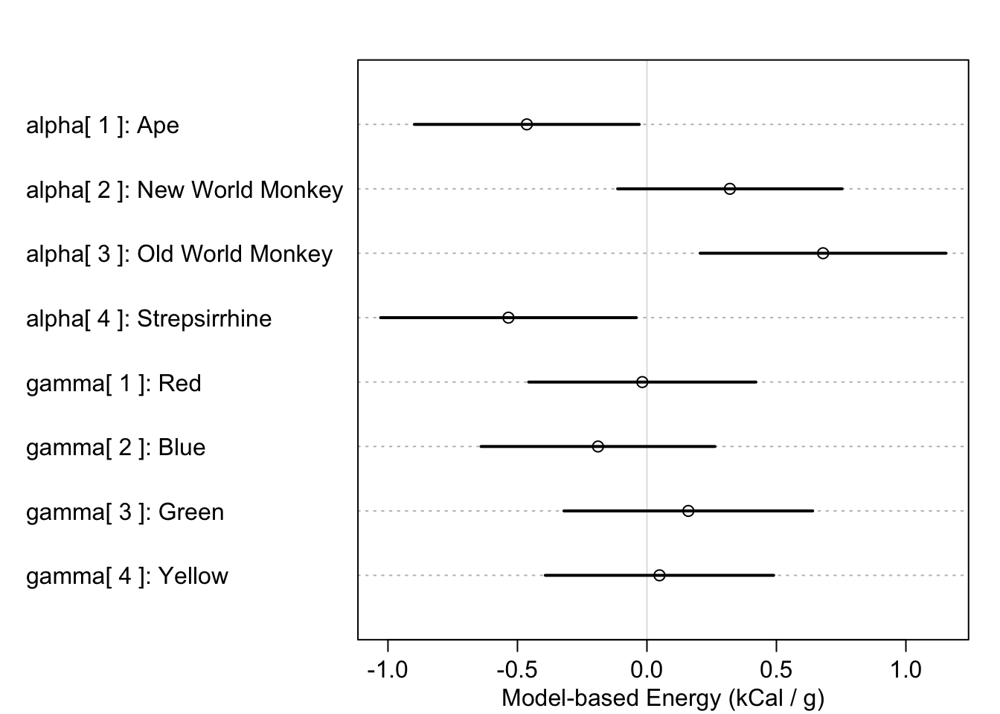
Finally, the idea of working with contrasts in Bayesian models is far more appealing than that of maximum likelihood models. In the latter, we are forced to come up with contrast statements to combine parameters and then assess the significance of the combination. However, with Bayesian models its as simple as computing the difference in posterior samples, then examining the distribution:
post <- extract.samples(fit.mcateg)
post$diff1 <- post$alpha[, 1] - post$alpha[, 2]
precis(post, pars="diff")
Chapter 3, Revisited
A subtlety of Chapter 3, ‘Sampling the Imaginary’, was the notion that posterior samples are easier to work with than theoretically-defined models. I was initially surprised at this claim, but I later agreed with the reasoning that most scientists are uncomfortable with integral calculus (including me). In practice, anyways, everything is approximated through discrete computations on a computer, so there’s no point in holding fast with theory just for theory’s sake. In the end, everything gets converted to an arbitrary level of numerical approximation.
For this reason, it’s so much easier to define and measure contrasts in a Bayesian framework. If I want to know how parameters compare to one another, I just compare the samples. If instead I wanted to test for linearity in a categorical predictor using likelihood theory, I would have a much harder time constructing the appropriate contrast statement.
Chapter 6
Managing Multicollinearity
Multicollinearity is bad thing for regressions. I never intuitively understood why, but I had enough training to sense that it emerges when two predictors are correlated. The consequence (so I thought) was that condifence intervals tended to be very wide when both predictors were included in a model.
But the textbook offers a much simpler, straightforward explanation of multicollinarity: Does knowing the second predictor offer any value, once you know the first predictor?. In the example at the beginning of chapter 6, the answer is ‘no’. If you’re predicting human heights, then knowing the length of the second length offers no value beyond knowing the length of the first leg.
Yet there’s still a simpler intuition! Imagine we include the same predictor, \(x\), as two separate ‘predictors’ in a regression. We’d be duplicating the information available to the model, which would look like this:
\[ \begin{align} y_i \sim \text{Normal}(\mu_i, 1) \\ \mu=\alpha+\beta_1x +\beta_2x \end{align} \] The problem, here, is that the model doesn’t know how to identify which copy of \(x\) is ‘imortant’, and there are infinitely many solutions that combine \(\beta_1\) and \(\beta_2\) to add up to the correct value, which I represent as \(\beta^*\) below:
\[ \begin{align} y_i \sim \text{Normal}(\mu_i, 1) \\ \mu=\alpha+\beta^*x \\ \text{where} \quad \beta^*=\beta_1 +\beta_2 \end{align} \]
Further, the fact that the model is confused by copies of the same predictor means that \(\beta_1\) and \(\beta_2\) will be negatively correlated with high magnitude. The posterior will occupy a narrow ‘ridge’ of paired values for the two parameters, and the sum of the parameters will be appropriately distributed around the value \(\beta^*\):
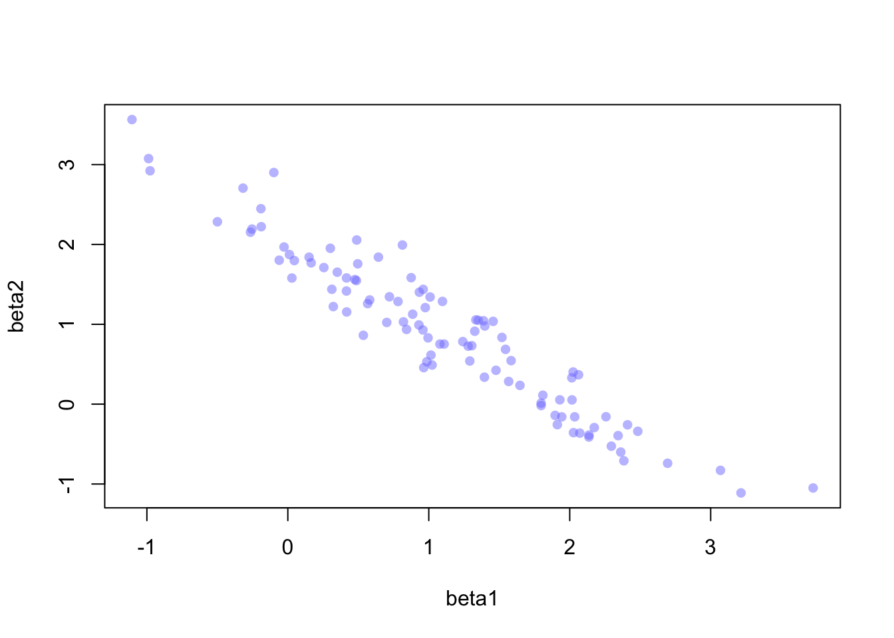
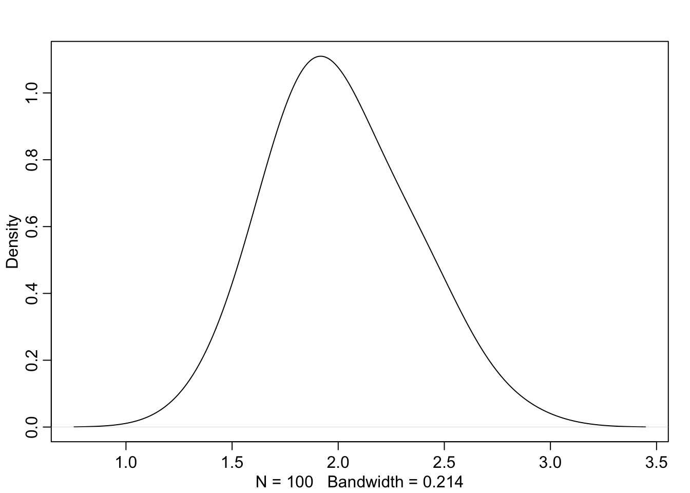
A Pair of Paradoxes
I’d heard of Simpson’s Paradox many times throughout statistics courses which occurs if data are under-adjusted. The classic example is gender bias in university admission (not sure how well this has aged). Essentially, the failure to consider both the gender and the target program of the applicant will yield inferences that are misleading; one should consider both effects simultaneously to understand how admission rates vary.
However, a phenomenon was introduced to me in this chapter, which goes by the name Berkson’s Paradox. One example is that good restaurants tend to either have great burgers or great fries, but not both. This observation may deceptively suggest a negative correlation between quality of burgers and fries; however, we’ve only considered the best restaurants and failed to include all the mediocre and below-average restaurants.
The interesting thing for me is to reflect on how the two paradoxes reflect mistakes that can occur when the opposite actions are taken. In Simpson’s, it’s the mistake of under-adjusting; in Berkson’s, it’s over-adjusting. The only real way for a scientist to know for sure that their model is correct is use DAGs and develop a working knowledge of the causal chain of events.
Post-Treatment Bias
Spending a lot of time doing observational research has clearly weakend my skill in analyzing treatment effects and recognizing their pitfalls. Post-treatment bias occurs when including a predictor that is solely a consequence of the treatment effect, and also affects the outcome. It sounds like a mediator but it is subtely different:
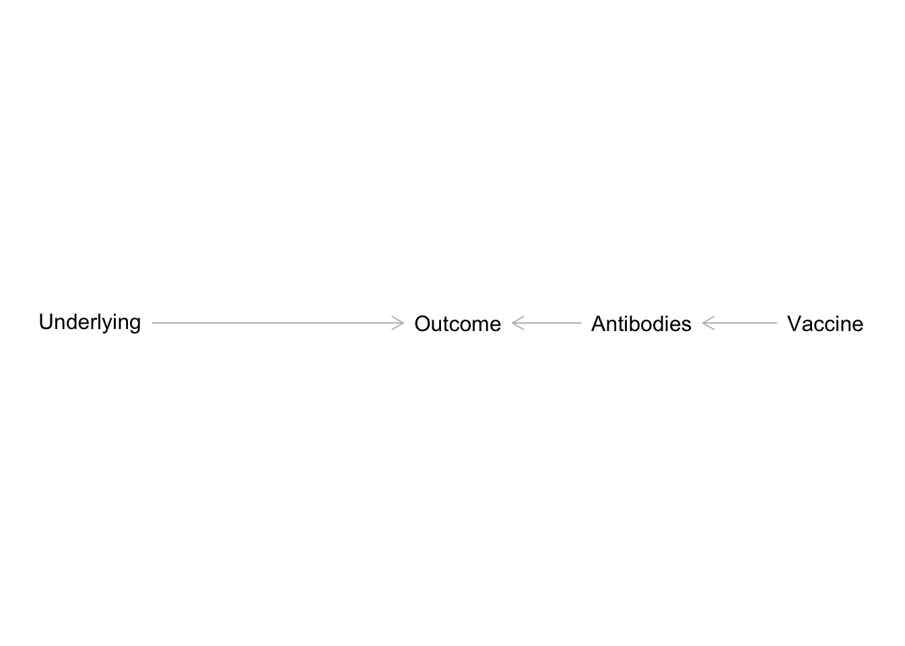
Definition: The textbook uses the term d-separation to describe the phenomenon of blocking effects between a treatment and outcome by conditioning on a post-treatment consequence.
The simplified example in Figure 4 is related to my current work in pediatric medical research. We’re interesting in how underlying medical conditions affect some clinical outcome, say influenza-related hospitalizations. At the same time, there’s a vaccine available for influenza. If children received the flu vaccine, they’re less likely to have severe infections and more likely to develop antibodies. In this sense, antibodies are a post-treatment consequence of flu vaccine uptake. For those that didn’t receive the flu vaccine, infections are more likely to be severe and no antibodies develop. If we included antibodies along with vaccination uptake in a multiple regression, we’d end up blocking the path between vaccine uptake and the clinical outcome.
Footnotes
Statistical Rethinking by Richard McElreath. Second Edition. https://xcelab.net/rm/.↩︎
Efficiency Property of Maximum Likelihood Estimators. https://en.wikipedia.org/wiki/Maximum_likelihood_estimation#Efficiency.↩︎
Rethinking package for R. https://github.com/rmcelreath/rethinking.↩︎
Metropolis-Hastings Algorithm. https://en.wikipedia.org/wiki/Metropolis%E2%80%93Hastings_algorithm.↩︎